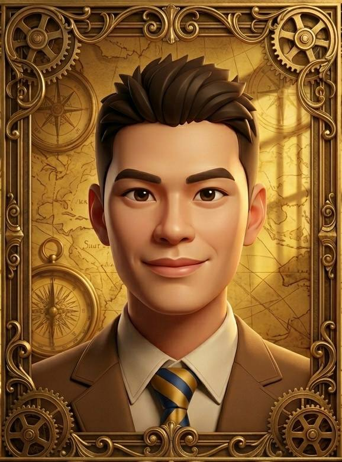
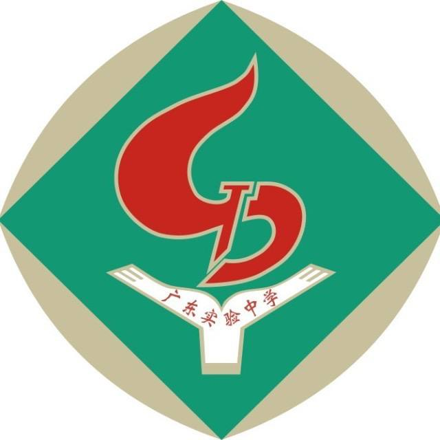
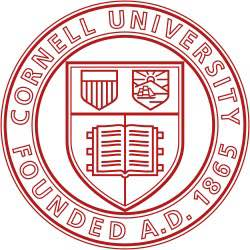
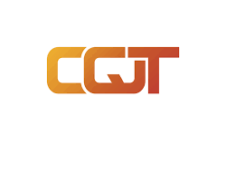
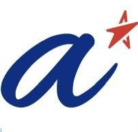

Vince Huang Weixi
（Antonio Wong Ngai
Hei）
I am a second-year Physics student at the National University of Singapore (NUS), driven by the potential of translating fundamental quantum phenomena into scalable technologies. Currently, as a Research Assistant at the Centre for Quantum Technologies (CQT), I specialize in the engineering of modular optical systems for laser frequency stabilization—a critical component for trapped-ion ($Yb^+$) quantum computing.
My expertise bridges the gap between theoretical modeling and high-precision experimental physics. Whether I am optimizing optical layouts using PyOpticL, fabricating 2D material devices in the cleanrooms of A*STAR, or simulating topological circuits in Python, I aim to build the hardware foundations required for the next generation of quantum information processing.
Beyond the lab, I am a dedicated birdwatching enthusiast and have previously led conservation-focused student organizations, a passion that keeps me grounded in the intricate patterns of the natural world.
Educational Background

Guangdong Experimental High
School
(广东实验中学)
2018.09 - 2024.05
National University of Singapore
2024.08 - 2028.05
Bachelor of Science (Hons)
Major
in Physics, Minor in Mathematics

Cornell University
2026.08 - 2026.12
Academic Exchange Program
Research Experience

Centre for Quantum Technologies (CQT)
Jan 2026 - PresentUROPS Project | Supervisor: Prof. Dzmitry Matsukevich
- Designed a compact (25 × 50 cm) and modular optical breadboard for stabilising a 369 nm laser used in trapped ion ($Yb^+$) quantum computing.
- Optimised optical layout using PyOpticL to minimise footprint while preserving optical performance.
- Aligned optical setup on vibration-isolated optical table for stable beam propagation and cavity coupling.
- Processed cavity error signals and implemented feedback control for laser locking.

A*STAR Q.InC
Aug 2025 - Nov 2025Research Assistant | Supervisor: Dr. Aaron Lau
- Gained hands-on experience in micro/nanofabrication processes, including laser lithography, Nanofrazor, metal deposition, and liftoff techniques for 2D material-based devices.
- Gained understanding of complete device fabrication workflow from material growth/transfer to electrode definition and characterization.
- Optimized the PPC-based lithography and plasma etching process for 2D material devices, resulting in much cleaner device interfaces compared to conventional PMMA-based methods.
NUS Department of Physics
Jan 2025 - Oct 2025Research Assistant | Supervisor: Dr. Haydar Sahin
- Studied new topological circuits with memristor emulator under guidance of Prof. Lee Ching Hua and Dr. Haydar Sahin, to build a robust circuits which can memorize the topological phase of the circuits.
- Gained experience on literature review and using LTspice and Python to simulate physical models.
Natural Wonders
Birdwatching
As a dedicated birdwatching enthusiast, I immerse myself in the intricate patterns of the natural world. Patient observation of nature's delicate mechanisms brings a profound sense of balance to my scientific pursuits, grounding my understanding of complex systems and finding rhythm outside the laboratory.